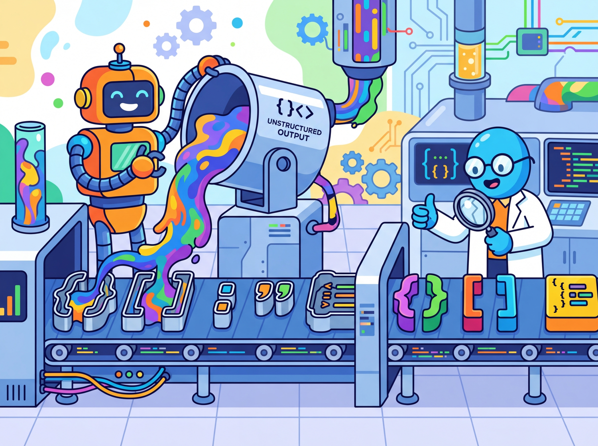
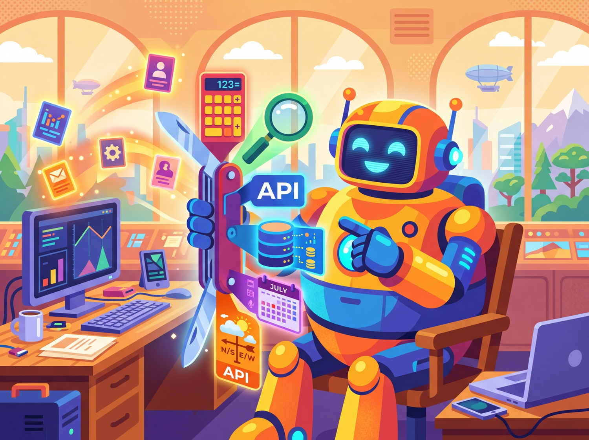

The difference between a demo and a product is parsing the output.
Pip AI Agent
Prerequisites
This section builds directly on the API landscape and authentication patterns from Section 10.1. Familiarity with JSON Schema basics is helpful. The constrained decoding techniques from Section 05.3 explain the underlying mechanism that providers use to guarantee valid structured output.
Why structured output matters: LLMs generate free-form text by default, but production applications need predictable, parseable data. Whether you are extracting entities from documents, generating API parameters, or building agent pipelines, you need the model's output to conform to a specific schema. This section covers two complementary approaches: constrained output formats (JSON mode, response schemas) that guarantee structural validity, and tool/function calling that lets models invoke external systems as part of their reasoning process. The decoding strategies from Section 05.3 (grammar-constrained generation) provide the theoretical foundation for how structured output is enforced.
1. The Structured Output Problem Intermediate

Consider a simple task: extract the name, email, and sentiment from a customer support message. This type of structured information extraction is one of the most common LLM use cases in production. If you ask an LLM to do this with a plain text prompt, you might get the information scattered across prose, formatted inconsistently, or wrapped in unnecessary explanation. To build reliable pipelines, you need the model to return a specific JSON structure, every time, without deviation.
Without enforcement, an LLM asked for JSON might return: Here is the JSON: {"name": "Alice"... (wrapped in prose), or {"name": "Alice", "sentiment": "frustrated"} (missing required fields), or sometimes valid JSON with trailing commas that crash json.loads(). Teams that skip structured output enforcement spend significant engineering time writing parsing heuristics, handling edge cases, and retrying failures. The patterns in this section eliminate that entire category of bugs.
Why does JSON mode fail without schema enforcement? JSON mode guarantees that the output is syntactically valid JSON, but it says nothing about which keys appear, what types the values have, or whether required fields are present. The model is free to invent any JSON structure it wants. This is because JSON mode works at the token level: during constrained decoding, the model's output logits are masked so that only tokens forming valid JSON syntax can be selected. But the decoding constraint is purely syntactic; it has no knowledge of your application's schema. Schema-constrained generation solves this by adding semantic constraints: the model must produce a JSON object that matches a specific JSON Schema, with required keys, correct types, and valid enum values.
The progression from prompt-based to schema-constrained output enforcement recapitulates a fundamental distinction in formal language theory: the difference between generating strings that belong to a language (generative grammar) and filtering strings against a specification (parsing/validation). When you ask a model to "return JSON" via a prompt, you are relying on the model's implicit grammar. When you enforce a JSON Schema at the decoding level, you are applying a formal grammar as a hard constraint on the token selection process. This is precisely the approach that compiler designers have used since the 1960s: context-free grammars (CFGs) constrain what sequences of tokens constitute valid programs. Constrained decoding applies the same idea to LLM generation, intersecting the model's probability distribution with a formal automaton that accepts only valid outputs. The mathematical framework (finite-state machines, pushdown automata) was developed by Chomsky and others in the 1950s for natural language, then adopted by computer science for programming languages, and is now returning to its origins as a tool for controlling AI language generation.
There are three levels of structured output enforcement, each with increasing reliability:
- Prompt-based: You ask the model to return JSON in the system prompt. This works most of the time, but the model can still return malformed JSON or add commentary outside the JSON block.
- JSON mode: The API guarantees the response is valid JSON, but does not enforce a specific schema. The model chooses the keys and structure.
- Schema-constrained: The API guarantees the response matches a specific JSON Schema. This is the most reliable approach, as it enforces both validity and structure at the decoding level.
Figure 10.2.1 compares these three levels of enforcement, highlighting the reliability and trade-offs of each approach.
2. JSON Mode and Response Schemas Intermediate
Before structured output modes existed, developers resorted to prompts like "Please respond ONLY in valid JSON. I repeat, ONLY JSON. No markdown. No explanation." followed by a regex prayer and a try/except block. The introduction of schema-constrained generation was one of the most celebrated quality-of-life improvements in the LLM tooling ecosystem.
2.1 OpenAI JSON Mode
OpenAI's simplest structured output option is JSON mode, activated by setting response_format={"type": "json_object"}. This guarantees the response is valid JSON but does not enforce any particular schema. You must include the word "JSON" in your prompt for this mode to work reliably. Code Fragment 10.2.1 shows the basic JSON mode approach, and Code Fragment 10.2.2 demonstrates Instructor's Pydantic-based validation for stricter enforcement.
# Use OpenAI structured outputs with a JSON schema constraint
# The model is forced to return valid JSON matching the schema
from openai import OpenAI
client = OpenAI()
# Send chat completion request to the API
response = client.chat.completions.create(
model="gpt-4o",
response_format={"type": "json_object"},
messages=[
{"role": "system", "content": "Extract contact info. Return JSON with keys: name, email, sentiment."},
{"role": "user", "content": "Hi, I'm Sarah Chen (sarah@example.com) and I love your product!"}
]
)
import json
# Extract the generated message from the API response
data = json.loads(response.choices[0].message.content)
# Pretty-print for readability
print(json.dumps(data, indent=2))response_format to json_object guarantees valid JSON output. The prompt must explicitly request JSON for this mode to activate reliably.Instructor combines LLM calls with Pydantic validation, eliminating manual JSON parsing entirely:
import instructor
from pydantic import BaseModel
from openai import OpenAI
class Contact(BaseModel):
name: str
email: str
sentiment: str
client = instructor.from_openai(OpenAI())
contact = client.chat.completions.create(
model="gpt-4o", response_model=Contact,
messages=[{"role": "user", "content": "Hi, I'm Sarah Chen (sarah@example.com) and I love your product!"}]
)
print(contact.name) # "Sarah Chen" (typed, validated)
pip install instructor
Code Fragment 10.2.2 demonstrates strict validation with Instructor.
# Use Instructor to extract structured Pydantic objects from LLM responses
# Instructor patches the OpenAI client to return validated models
import instructor
from pydantic import BaseModel, Field
from openai import OpenAI
client = instructor.from_openai(OpenAI())
class StrictRating(BaseModel):
score: int = Field(ge=1, le=5, description="Rating from 1 to 5 only")
explanation: str
# Instructor retries automatically if the model returns score=6 or score=0
rating = client.chat.completions.create(
model="gpt-4o",
response_model=StrictRating,
max_retries=3, # Retry up to 3 times on validation failure
messages=[
{"role": "user", "content": "Rate this product on a scale of 1-10: Amazing!"}
]
)
# Even though the prompt says "1-10", Pydantic enforces 1-5 via retries
print(f"Score: {rating.score} (constrained to 1-5)")
print(f"Explanation: {rating.explanation}")4. Function Calling and Tool Use Intermediate

Structured output and function calling serve fundamentally different purposes, even though both produce JSON. Structured output constrains the model's response format (data extraction, classification). Function calling enables the model to request external actions (API calls, database queries, calculations). Think of structured output as "give me data in this shape" and function calling as "do this thing for me." They are complementary: you can use structured output to validate function call arguments, and function results can be returned as structured data.
Function calling (also called "tool use") is a mechanism that lets the model indicate it wants to invoke an external function rather than produce a text response. This capability is the foundation for building AI agents that can take actions in the world. The model does not actually execute the function; instead, it generates a structured JSON object containing the function name and arguments. Your application code executes the function and sends the result back to the model, which then incorporates it into its response. Figure 10.2.2 shows this request, execute, and respond loop in detail.
Why function calling is architecturally different from prompt-based JSON. When you ask a model to "return JSON with a function name and arguments," you are relying on the model's instruction-following ability. The model might return valid JSON, but there is no guarantee it will match your function signatures, and there is no mechanism for the model to signal "I need to call a function" versus "I want to respond with text." Function calling is a first-class API feature: the model's output layer is trained to produce a special tool_calls structure, and the API response includes a distinct finish_reason ("tool_calls" instead of "stop") that your code can branch on programmatically. This is the foundation for agent tool use in Chapter 22, where models autonomously decide which tools to invoke and in what order.
4.1 OpenAI Function Calling
In the OpenAI API, you define available tools in the tools parameter, each with a name, description, and a JSON Schema for its parameters. When the model decides a tool is needed, it returns a response with finish_reason="tool_calls" instead of producing text. Code Fragment 10.2.3 shows this approach in practice.
# Set up structured output extraction from the LLM
# Parse the response into a typed data structure
from openai import OpenAI
import json
client = OpenAI()
# Define the available tools
tools = [
{
"type": "function",
"function": {
"name": "get_weather",
"description": "Get current weather for a city",
"parameters": {
"type": "object",
"properties": {
"city": {"type": "string", "description": "City name"},
"units": {
"type": "string",
"enum": ["celsius", "fahrenheit"],
"description": "Temperature unit"
}
},
"required": ["city"]
}
}
}
]
# Simulated weather function
def get_weather(city: str, units: str = "celsius") -> str:
data = {"Paris": "22C, sunny", "London": "15C, cloudy", "Tokyo": "28C, humid"}
return data.get(city, f"No data for {city}")
# Step 1: Send user message with tools
response = client.chat.completions.create(
model="gpt-4o",
messages=[{"role": "user", "content": "What's the weather in Paris?"}],
tools=tools
)
# Step 2: Check if model wants to call a tool
message = response.choices[0].message
if message.tool_calls:
tool_call = message.tool_calls[0]
args = json.loads(tool_call.function.arguments)
print(f"Model wants to call: {tool_call.function.name}({args})")
# Step 3: Execute the function
result = get_weather(**args)
# Step 4: Send result back to model
final_response = client.chat.completions.create(
model="gpt-4o",
messages=[
{"role": "user", "content": "What's the weather in Paris?"},
message, # The assistant's tool_call message
{"role": "tool", "tool_call_id": tool_call.id, "content": result}
],
tools=tools
)
print(f"Final answer: {final_response.choices[0].message.content}")tools schema defining get_weather parameters, (2) check message.tool_calls to see if the model requests a function, (3) execute get_weather(**args) locally, and (4) send the result back as a "role": "tool" message for the model to compose a natural-language answer.For simple extraction tasks (no external tool calls), Marvin turns LLM calls into Python function decorators:
import marvin
@marvin.fn
def sentiment(text: str) -> str:
"""Return 'positive', 'negative', or 'neutral'."""
@marvin.fn
def extract_cities(text: str) -> list[str]:
"""Extract all city names mentioned in the text."""
print(sentiment("I love this product!")) # "positive"
print(extract_cities("Flights from Paris to Tokyo")) # ["Paris", "Tokyo"]
pip install marvin. Marvin handles prompt construction, parsing, and validation automatically.
4.2 Anthropic Tool Use
Anthropic's tool use follows the same conceptual pattern but with different API conventions. Tools are defined with input_schema (instead of parameters), and the response uses content blocks with a tool_use type. The tool result is sent back as a tool_result content block. Code Fragment 10.2.4 shows this approach in practice.
# Define tools for function calling and handle tool_calls in the response
# The model decides which function to invoke based on the user query
import anthropic
import json
client = anthropic.Anthropic()
tools = [
{
"name": "get_weather",
"description": "Get current weather for a city",
"input_schema": {
"type": "object",
"properties": {
"city": {"type": "string", "description": "City name"},
"units": {"type": "string", "enum": ["celsius", "fahrenheit"]}
},
"required": ["city"]
}
}
]
def get_weather(city, units="celsius"):
data = {"Paris": "22C, sunny", "London": "15C, cloudy"}
return data.get(city, f"No data for {city}")
# Step 1: Send request with tools
response = client.messages.create(
model="claude-sonnet-4-20250514",
max_tokens=300,
tools=tools,
messages=[{"role": "user", "content": "What's the weather in Paris?"}]
)
# Step 2: Find the tool_use block
for block in response.content:
if block.type == "tool_use":
print(f"Tool call: {block.name}({block.input})")
result = get_weather(**block.input)
# Step 3: Send tool result back
final = client.messages.create(
model="claude-sonnet-4-20250514",
max_tokens=300,
tools=tools,
messages=[
{"role": "user", "content": "What's the weather in Paris?"},
{"role": "assistant", "content": response.content},
{"role": "user", "content": [
{"type": "tool_result", "tool_use_id": block.id, "content": result}
]}
]
)
print(f"Final: {final.content[0].text}")4.3 Google Gemini Function Calling
Google Gemini uses function_declarations for tool definitions and returns function calls as structured parts in the response. The syntax differs from both OpenAI and Anthropic, but the conceptual loop (define tools, receive a call, execute, return results) is identical. Code Fragment 10.2.5 shows this approach in practice.
# Use Google Gemini function calling for structured output
# Gemini uses FunctionDeclaration for tool definitions
from google import genai
from google.genai import types
client = genai.Client()
# Define tools using function_declarations
weather_tool = types.Tool(
function_declarations=[
types.FunctionDeclaration(
name="get_weather",
description="Get current weather for a city",
parameters=types.Schema(
type="OBJECT",
properties={
"city": types.Schema(type="STRING", description="City name"),
},
required=["city"],
),
)
]
)
def get_weather(city: str) -> str:
data = {"Paris": "22C, sunny", "Tokyo": "28C, humid"}
return data.get(city, f"No data for {city}")
# Step 1: Send request with tools
response = client.models.generate_content(
model="gemini-2.5-flash",
contents="What's the weather in Paris?",
config=types.GenerateContentConfig(tools=[weather_tool]),
)
# Step 2: Extract the function call from the response
part = response.candidates[0].content.parts[0]
print(f"Function call: {part.function_call.name}({dict(part.function_call.args)})")
result = get_weather(**dict(part.function_call.args))
# Step 3: Send function response back
from google.genai.types import Content, Part
final = client.models.generate_content(
model="gemini-2.5-flash",
contents=[
Content(parts=[Part(text="What's the weather in Paris?")], role="user"),
response.candidates[0].content,
Content(parts=[Part(function_response=types.FunctionResponse(
name="get_weather", response={"result": result}
))], role="user"),
],
config=types.GenerateContentConfig(tools=[weather_tool]),
)
print(f"Final: {final.text}")function_declarations and typed response parts. The three-step pattern mirrors OpenAI and Anthropic, but uses Gemini-specific types for tool definitions and function responses.Malformed tool call arguments: Although models are generally reliable at producing valid JSON for tool calls, they can occasionally generate malformed arguments, especially with complex schemas. Always wrap your json.loads() call in a try/except block and implement a retry strategy. When using Instructor with tools, this retry logic is handled automatically.
5. Parallel and Sequential Tool Calls Intermediate
Modern LLMs can request multiple tool calls in a single response. For instance, if a user asks "What is the weather in Paris and Tokyo?", the model may emit two get_weather calls simultaneously. Your application should detect multiple tool calls and execute them in parallel for better performance. Code Fragment 10.2.6 shows this approach in practice.
# Run multiple LLM calls concurrently using asyncio
# Async batching reduces wall-clock time for parallel requests
import asyncio
from openai import OpenAI
import json
client = OpenAI()
tools = [
{
"type": "function",
"function": {
"name": "get_weather",
"description": "Get current weather for a city",
"parameters": {
"type": "object",
"properties": {
"city": {"type": "string"}
},
"required": ["city"]
}
}
}
]
def get_weather(city):
data = {"Paris": "22C, sunny", "Tokyo": "28C, humid", "London": "15C, cloudy"}
return data.get(city, "Unknown")
# Send chat completion request to the API
response = client.chat.completions.create(
model="gpt-4o",
messages=[{"role": "user", "content": "Weather in Paris and Tokyo?"}],
tools=tools
)
# Extract the generated message from the API response
message = response.choices[0].message
print(f"Number of tool calls: {len(message.tool_calls)}")
# Execute all tool calls and collect results
tool_messages = []
for tc in message.tool_calls:
args = json.loads(tc.function.arguments)
result = get_weather(**args)
print(f" {tc.function.name}({args}) = {result}")
tool_messages.append({
"role": "tool",
"tool_call_id": tc.id,
"content": result
})
# Send all results back at once
final = client.chat.completions.create(
model="gpt-4o",
messages=[
{"role": "user", "content": "Weather in Paris and Tokyo?"},
message,
*tool_messages
],
tools=tools
)
print(f"\nFinal: {final.choices[0].message.content}")6. Cross-Provider Tool Use Comparison Intermediate
| Aspect | OpenAI | Anthropic | Google Gemini |
|---|---|---|---|
| Tool definition key | tools[].function.parameters |
tools[].input_schema |
tools[].function_declarations |
| Tool call in response | message.tool_calls[] |
Content block type tool_use |
function_call part |
| Tool result role | "tool" |
"user" with tool_result block |
"function" response part |
| Parallel calls | Yes (multiple tool_calls) | Yes (multiple tool_use blocks) | Yes |
| Force tool use | tool_choice: "required" |
tool_choice: {"type": "any"} |
tool_config: {mode: "ANY"} |
Tools + structured output = reliable agents: Function calling and structured output serve complementary roles. Structured output constrains what the model produces (data extraction). Tool use enables what the model can do (action execution). Combining both lets you build agent loops where the model reasons about which actions to take, invokes tools with validated parameters, and returns structured results. This combination is the foundation of the agentic architectures we will explore in later chapters.
The tool definitions shown in this section are provider-specific (OpenAI format, Anthropic format, Gemini format). The Model Context Protocol (MCP) is an emerging open standard that defines a provider-agnostic way to expose tools, data sources, and prompts to LLMs. Rather than defining tools in each provider's format, you define them once in MCP format, and compatible clients handle the translation. As the agentic ecosystem matures, MCP (or a successor) is likely to become the standard interface between LLMs and external systems.
Try these experiments with the code examples from this section:
- In the Instructor nested model example, change the
severityfield's constraint fromge=1, le=5toge=1, le=3and send the same customer support message. Observe whether the model respects the tighter constraint. Then setmax_retries=3on thecreate()call and intentionally prompt for a severity of 10 to see Instructor's retry behavior. - Modify the OpenAI function calling example to add a second tool (e.g.,
get_timefor a city's timezone). Ask "What time is it in Paris, and what's the weather?" and observe whether the model requests both tools in a single response. - Compare tool use across providers: take the same weather tool and implement it for both OpenAI and Anthropic. Note the differences in how tool results are sent back (dedicated
"tool"role vs."user"withtool_resultblock).
Knowledge Check
Show Answer
json_schema with strict: true) guarantees the response matches a specific JSON Schema, including required fields, correct types, and valid enum values. Schema-constrained output modifies the decoding process itself, making it impossible for the model to produce output that violates the schema.Show Answer
Show Answer
Show Answer
"user" containing a content block of type "tool_result". The block must include the tool_use_id from the original tool call and the result as a string in the content field. This differs from OpenAI, which uses a dedicated "tool" role.Show Answer
message.tool_calls for OpenAI, or multiple tool_use content blocks for Anthropic). Your application should execute all the tool calls (ideally in parallel for better performance), collect all results, and send them all back in the next request so the model can incorporate all the information into its final response.In production, log the prompt hash, model name, token counts, latency, and at minimum a truncated response for every API call. This costs almost nothing but is essential for debugging quality regressions, cost audits, and building evaluation datasets.
Key Takeaways
- Three levels of structure: Prompt-based JSON (~85% reliable), JSON mode (~98% reliable), and schema-constrained output (~100% reliable). Always use the strongest enforcement your provider supports.
- Pydantic + Instructor simplifies everything: Define schemas as Python classes with type annotations. Instructor handles conversion to provider-specific formats, validation, and retries automatically.
- Function calling is a proposal, not execution: The model generates structured arguments for a function call. Your code executes the function and returns the result. This separation keeps the model sandboxed.
- Tool definitions differ across providers: OpenAI uses
parameters, Anthropic usesinput_schema, and Google usesfunction_declarations. The conceptual pattern is identical, but the JSON structures require provider-specific handling. - Parallel tool calls improve performance: Modern models can request multiple tool calls simultaneously. Execute them concurrently and return all results together.
- Tools + structured output = reliable agents: Structured output constrains the format; tool use enables external actions. Together, they form the backbone of agentic architectures.
- Beyond Pydantic: For teams that need compile-time type safety across multiple services, BAML offers a dedicated schema language that compiles to type-safe client code. See Section 12.5 for BAML in action with information extraction.
With structured output and tool calling in place, your LLM integration can produce reliable data and interact with external systems. The next challenge is making these calls production-grade: handling provider outages, managing costs, caching responses, and degrading gracefully when things go wrong. Section 10.3 covers the engineering patterns that bridge the gap between a working prototype and a system you can trust in production.
Who: A two-person ML team at an accounting automation company processing 15,000 invoices per month.
Situation: They used GPT-4 to extract line items, dates, totals, and vendor details from scanned invoices, then parsed the free-text response with a complex regex pipeline to populate their database.
Problem: The regex pipeline broke on roughly 8% of responses due to formatting inconsistencies (extra commas, missing fields, varied date formats), requiring manual correction that consumed 20 hours per week.
Dilemma: They considered making the parsing regex more robust (low effort, diminishing returns), switching to function calling with a defined schema (moderate effort, provider lock-in), or adopting Pydantic with Instructor for type-safe structured output (higher initial effort, portable across providers).
Decision: They chose Instructor with Pydantic models, defining strict schemas for invoice data with field validators for dates, currency amounts, and required fields.
How: They defined a Pydantic model with nested structures (InvoiceLineItem, VendorInfo, InvoiceTotal), added field validators for date parsing and currency normalization, and used Instructor's retry mechanism to automatically re-prompt on validation failures.
Result: Parse failures dropped from 8% to 0.3%, manual correction time fell from 20 hours to 2 hours per week, and the team eliminated 400 lines of regex code. The Pydantic models also served as documentation for downstream services.
Lesson: Structured output with schema validation eliminates the fragile parsing layer between LLM responses and application logic; the upfront investment in schema definition pays for itself immediately in reliability.
Before structured output existed, developers wrote elaborate regex parsers to extract JSON from LLM responses. Some production systems had more lines of parsing code than actual prompt logic. Instructor and Outlines made most of that parsing code obsolete overnight.
Grammar-constrained decoding. Libraries like Outlines and Guidance enforce output schemas at the token level during generation, achieving 100% structural validity without post-hoc retries. This approach, rooted in the constrained decoding theory from Section 05.3, is being integrated into serving engines like vLLM and SGLang for production use.
Tool use benchmarking. The Berkeley Function Calling Leaderboard (BFCL) tracks model accuracy across tool selection, argument extraction, and multi-step tool chains. As of early 2025, frontier models achieve 85 to 95% accuracy on complex multi-tool scenarios, but reliability on novel tool schemas remains an active challenge.
Structured output for agentic workflows. The convergence of structured output with agent frameworks (LangGraph, CrewAI) is enabling typed inter-agent communication, where agents exchange Pydantic models rather than free text, significantly reducing parsing errors in multi-agent pipelines.
Exercises
Describe the three levels of structured output enforcement (prompt-based, JSON mode, schema-constrained) and the reliability tradeoff at each level.
Answer Sketch
Prompt-based (~85% reliable): ask the model to return JSON in instructions; it may add prose or return malformed JSON. JSON mode (~99%): the API guarantees valid JSON but does not enforce a specific schema. Schema-constrained (~100%): the API enforces a JSON Schema at the decoding level, guaranteeing both validity and structure.
Write a Pydantic model for a customer support ticket extraction task that captures: customer name, email, issue category (enum of billing/technical/general), sentiment (positive/neutral/negative), and a summary string of at most 100 characters.
Answer Sketch
Define a Pydantic BaseModel with fields: name: str, email: EmailStr, category: Literal['billing', 'technical', 'general'], sentiment: Literal['positive', 'neutral', 'negative'], summary: str = Field(max_length=100). Use the Instructor library to pass this model as the response_model parameter.
Explain the complete lifecycle of a tool/function call: from the initial API request with tool definitions, through the model's tool call response, to the application executing the tool and returning results.
Answer Sketch
Step 1: Send messages plus tool definitions (name, description, parameter schema) to the API. Step 2: The model returns a response with tool_calls containing the function name and arguments as JSON. Step 3: The application parses and validates the arguments, executes the actual function. Step 4: Append the tool result as a new message with role 'tool' and call again so the model can incorporate the result.
Write Python code that handles a model response containing multiple parallel tool calls. Execute all tool functions concurrently using asyncio, then return the results to the model in a single follow-up request.
Answer Sketch
Parse response.choices[0].message.tool_calls to get a list of calls. Use asyncio.gather(*[execute_tool(tc.function.name, json.loads(tc.function.arguments)) for tc in tool_calls]) to run them concurrently. Build a list of tool result messages, each with role='tool' and tool_call_id matching the original call. Append all to messages and make a follow-up API call.
A production system uses schema-constrained output but occasionally receives valid JSON that passes schema validation yet contains semantically incorrect data (e.g., extracting 'New York' as a person name). What additional validation layers would you add?
Answer Sketch
Add post-validation layers: (1) Pydantic custom validators that check semantic constraints (e.g., regex for emails, known entity lists for names). (2) A lightweight classifier that scores extraction confidence. (3) Cross-field consistency checks (e.g., if category is 'billing' then the summary should mention payment terms). (4) Log and flag low-confidence extractions for human review.
What Comes Next
In the next section, Section 10.3: API Engineering Best Practices, we cover API engineering best practices including error handling, rate limiting, cost management, and reliability patterns.
OpenAI. (2024). Function Calling Guide.
Official guide to OpenAI's function calling feature, covering tool definitions, parallel tool calls, and forced function selection. The starting point for anyone implementing tool use with GPT models.
OpenAI. (2024). Structured Outputs Guide.
Explains JSON mode and the stricter Structured Outputs feature that guarantees schema-valid JSON responses. Covers the subset of JSON Schema supported and best practices for schema design.
Anthropic. (2024). Tool Use (Function Calling) Documentation.
Documents Anthropic's approach to tool use, including how tools are defined in the API, how Claude decides when to use them, and patterns for multi-step tool chains.
Liu, J. (2024). Instructor: Structured Outputs for LLMs.
Python library that patches LLM clients to return Pydantic models instead of raw text. Supports automatic retries on validation failure and works across OpenAI, Anthropic, and other providers. The most popular choice for type-safe LLM outputs.
Willison, S. (2024). Pydantic AI: Agent Framework with Structured Validation.
Agent framework from the Pydantic team that builds on Pydantic's validation strengths for LLM applications. Provides type-safe agent definitions with dependency injection and structured result types.
Boundary ML. (2024). BAML: A Domain-Specific Language for AI Applications.
A DSL for defining LLM function signatures with type-safe inputs and outputs. Generates client code in multiple languages and handles parsing, retries, and schema validation at the language level.